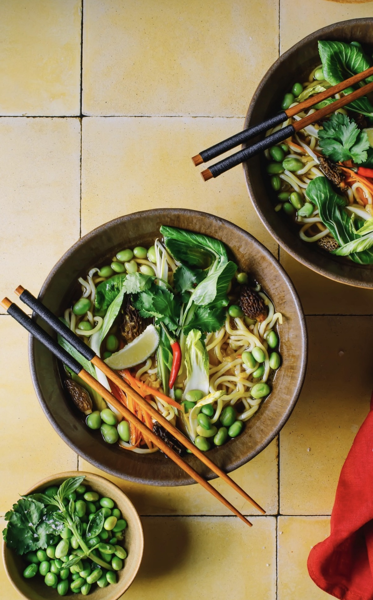

In Sardinien isst man nicht, um satt zu werden. Man isst, um zu leben.
In den Blue Zones – Regionen mit der höchsten Lebenserwartung der Welt – gibt es ein gemeinsames Muster: einfache Gerichte, die seit Generationen gekocht werden. Keine komplizierten Rezepte. Keine exotischen Zutaten. Nur das, was die Region hergibt.
In Sardinien ist es eine Suppe aus Bohnen, Spitzkohl, Sellerie, Tomaten und Olivenöl. Nichts Besonderes. Und doch alles, was der Körper braucht: Protein, Ballaststoffe, Pflanzenstoffe und gesunde Fette.
Die Menschen dort essen diese Suppe nicht, weil sie „gesund“ ist. Sie essen sie, weil sie schmeckt. Weil sie satt macht. Weil sie seit Jahrhunderten funktioniert.
Longevity beginnt nicht mit Perfektion. Sie beginnt mit dem, was sich wiederholt.